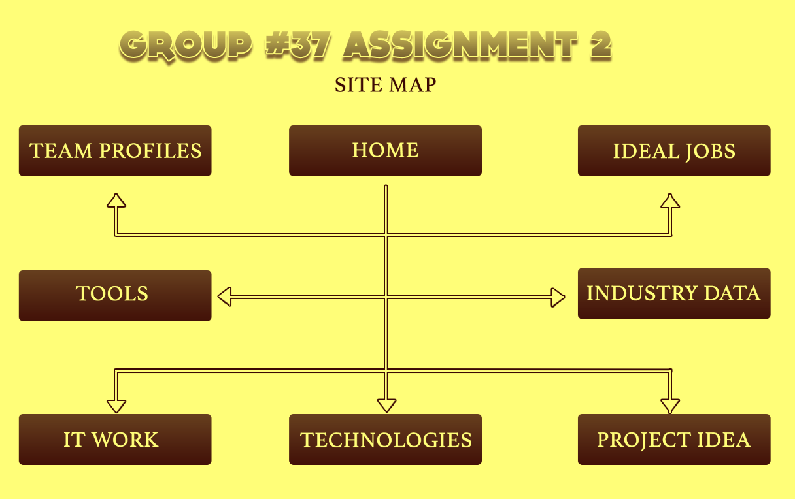
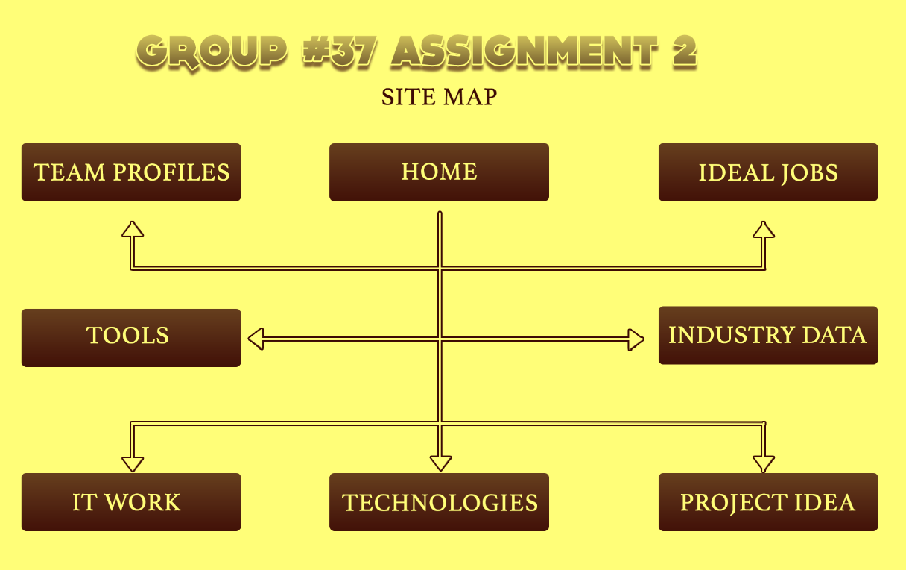

Project Draft
 

Keaton Ferber - Student ID: s3952394
My name is Keaton Ferber, I live in a small town in rural SA. I graduated Year 12 in 2014 and have previously worked as a cellar hand at a local winery for many years. My main hobby is playing video games, its something I’ve enjoyed since I was very young. I also enjoy watching movies, TV and anime. I’m a huge Star Wars fan and my favourite movie they have released is Star Wars: Revenge of the Sith. My friend got me into watching F1 in 2020 and I’ve been following avidly since. I root for Ferrari and my favourite driver is Charles Leclerc. I love cats and have a cat named Ezra; he keeps me company.
My interest in IT started at a young age. My interest with technology started with playing video games on our PlayStation 2, but I also spent a lot of time on our family desktop computer. I’ve always found computers fascinating and enjoyed tinkering with them. For my research project in high school, I built my own desktop computer. I really enjoyed the process and still build and upgrade my PCs to this day. I chose to study at RMIT as I was looking to Study IT through Open Universities Australia (OUA), and RMIT was recommended. I expect to learn the skills required for my chosen career.
Condense into one paragraph.
Dean Heighway - Student ID: s3925053
My name is Dean Heighway and I'm a 27-year-old born in Australia and of Australian decent, in my lifetime I’ve only ever spoken English and I've learned beginner levels or Italian. My highest level of education is finishing the HSC and also, I have completed a semester of a bachelor of nutrition.
I love all sports but have a keen interest in cricket, currently my season has just finished last week as my team lost in the semifinals however, I am enjoying watching the current tour of Australia to Pakistan.
My interest in IT stems from a long history of video games and love of computers, ever since I was four years old, I remember playing Warcraft 2 and StarCraft with my dad in his spare time and from then I was hooked in gaming. Over time my love of gaming developed into wanting a further understanding of the ins and outs of computers and the how and why of games; what powers them? How are they built?
I have very limited IT experience at the moment but its quickly growing throughout the duration of this course. I choose RMIT for my studies as it is one of the leading IT programs in the country and it also offers the convenience of online study, being someone who full time works I can’t attend standard university so I opt for the convenience of online. I expect to obtain a greater understanding of how computers work both internally and externally as well as a deeper understanding and competency of programming languages. Condense into one paragraph.
Nelson Kun - Student ID: s3941193
I'm an enthusiastic and positive individual that strives to do right by other people and also expect the same in return. I enjoy some sports, my hobbies range from playing golf to spending a good hour (or 12) playing Playstation. I've spent the pandemic learning to broaden my culinary skills, developing my digital skills and learn new things.
I was born in Melbourne with my background stemming to my paternal grandparents migrating from Europe during the Second World War and my maternal Grandparents were third generation Australians who descended from migrants from England.
One of my favourite places on this planet are the tropical getaways found in Thailand and Bali followed by the place I grew up that I will always call home - the Gold Coast. I am also currently halfway through a Bachelor of Business that is undertaken through Griffith University in Queensland.
My interest in IT began from the young age of eight or nine years of age, where I took computer classes as an elective and learned the basics, such as Microsoft Office and also participated in the Lego robotics workshops that were held after school some weeks. As years went by and I entered my teenage years I was interested in the world of modding computer games, such as modding new units in Age of Empire II and Star Wars Galactic Battlegrounds, two real time strategy games I spent countless hours on playing and making my own campaigns and maps. The inner workings of the game really intrigued to modifying content to match up things I envision and helped a few Pokemon fan-game projects during high school with graphics and design elements for a team building experience.
I remember picking up my first video game, called Wonder Boy on the Sega Master System when I was around three years old and exclaiming to my parents “sunshine in the trees!” whenever my character died, it was amusing at the time and essentially inducted me to enjoy gaming as a hobby as I got a little bit older. I remember when we got our very first video game console, the Super Nintendo Yoshi’s Island console bundle for Christmas in 1995 and I knew it was going to change my life forever. I remember gathering around with my mum, dad and younger sister and taking turns playing the first level and being defeated by Shy Guys and the Pirahna Plants and getting to a dead end. Everyone was perplexed as to where to go and we decided to put the game down for a break as we had Christmas lunch to go to. I remember turning the game back on when we got home and I figured out to throw one of Yoshi’s eggs at the question mark clouds and I was treated as if I discovered time travel! This memory is one that will always return me back to that moment and where my real interest in IT began from - the solving of problems.
I chose to study at RMIT as it has the reputation of being a premium tertiary educator, and with the way the world has evolved and is still evolving in the digital space, I feel it not optional but a necessity to be equipped with knowledge and understandings and further education in these industries. I anticipate to complete my two units of study (Introduction to IT and Introduction to Programming) to gain entry into a Bachelor of Information Technology.
My expectation from studying these units is to form a foundation of knowledge that is necessary to proceed further in these areas of studying and really get a feel for an area that piques my interest. I enjoy working on my computer and find the ease of being remote practical and efficient that matches my work ethic. I also expect to learn a lot of what I don’t know when it comes to information technology.